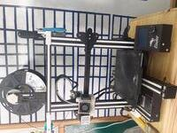
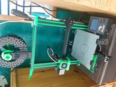
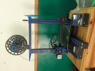

Aquí en Impresiones 3D contamos con una amplia selección de impresoras 3D para satisfacer todas tus necesidades.
Trabajamos con la marca ENDER 3 Pro dado su facil mantenimiento y reparacion de las mismas.
Ender 3 Pro v.2.
Impresora modificada en blanco para diferenciarlas de las demas las mejoras se imprimieron con la misma maquina
Impresora con cama magnetica de facil reemplazo para mas velocidad entre impresiones
Ender 3 Pro v.1.
Impresora modificada en verde para diferenciarlas de las demas las mejoras se imprimieron con la misma maquina
Impresora reparada con vidrio como bandeja para que la capa inferior salga con mayor calidad pero se tarda mas en depegar la pieza de la base
Ender 3 Pro v.2.
Impresora modificada en azul para diferenciarlas de las demas las mejoras se imprimieron con la misma maquina
Impresora con cama magnetica de facil reemplazo para mas velocidad entre impresiones